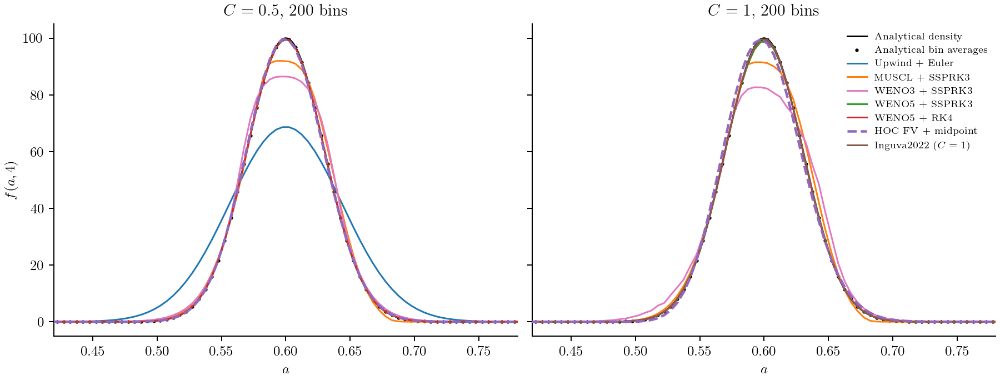
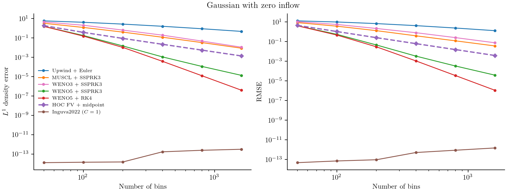
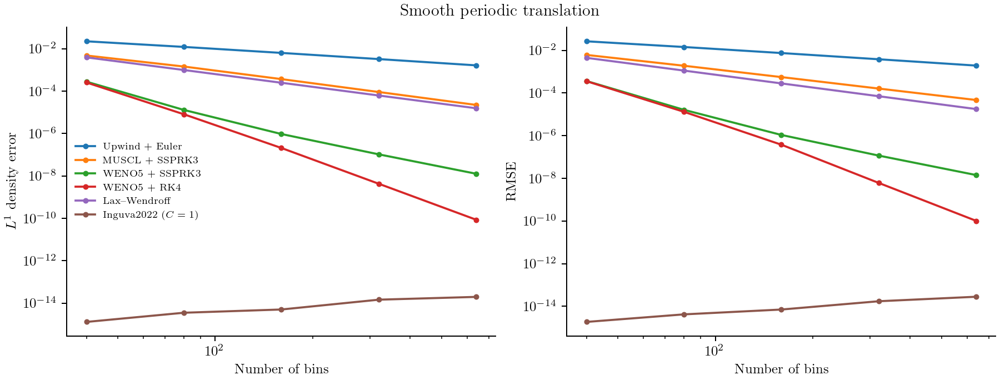
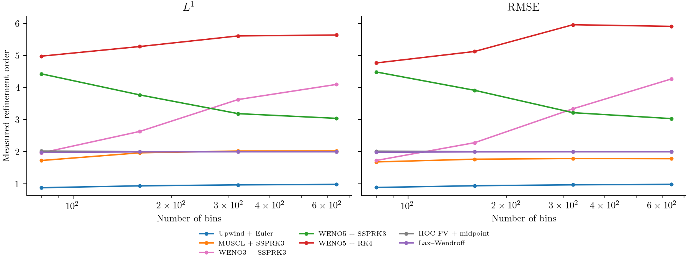
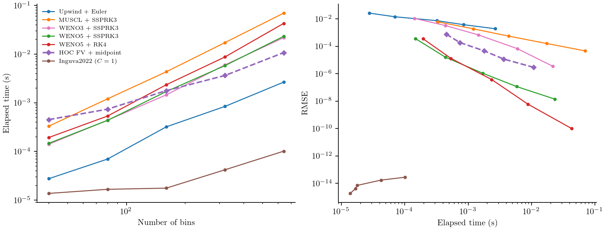

Comparing growth and time methods
If every particle grows at the same rate, the size distribution should move without broadening. This makes constant growth a useful test: the exact answer is known, and numerical diffusion, oscillations and computational cost can be compared without uncertainty about the physical kinetics.
We use the constant-growth equation from Case 1 of Inguva, Schickel and Braatz (2022), replacing its exponential initial condition with a localized Gaussian. We then repeat the comparison with the same smooth periodic distribution to measure convergence. The Gaussian makes numerical spreading and distortion easy to see; the periodic input separates refinement behaviour from physical boundaries.
Model, initial condition and boundaries
For $0\le a\le1$,
\[\frac{\partial f(a,t)}{\partial t} +0.1\frac{\partial f(a,t)}{\partial a}=0, \qquad f(a,0)=100\exp\!\left[-\frac{(a-0.2)^2}{2(0.03)^2}\right].\]
The incoming number flux is zero. The far boundary lets particles leave; the initial tail that can reach it by $t=4$ is negligible. The Gaussian's standard deviation is 0.03, independent of bin width, and its centre moves from 0.2 to 0.6. The analytical density is
\[f(a,t)=\begin{cases} 100\exp\!\left[-\frac{(a-0.1t-0.2)^2}{2(0.03)^2}\right],&0\le a-0.1t\le1,\\ 0,&\text{otherwise}. \end{cases}\]
All numerical states are bin integrals, initialized and assessed against exact bin integrals of this function. Sampling the Gaussian only at bin centres would add a separate initialization error. Its finite initial support leaves only about $1.3\times10^{-11}$ of the untruncated number below zero.
using PopulationBalanceModels
include(joinpath(pkgdir(PopulationBalanceModels),"examples","constant_growth_methods.jl"))
import .ConstantGrowthMethods
model = PBMModel(growth=Growth(AffineGrowth(0.1,0.0)))
grid = Grid1D(range(0.,1.;length=201);coordinate=:length)
bc = SizeBC(OpenBoundary(),OpenBoundary())
initial = ConstantGrowthMethods.gaussian_counts(grid,0.)
operator = compile(model,grid;methods=TermMethods(growth=MUSCL()),bc)
problem = PBMProblem(operator,initial,(0.,4.))
solution = simulate(problem;method=SSPRK33(),dt=0.5*first(grid.widths)/0.1)A representative set of methods
The comparison uses seven pairings. This keeps the plots readable while showing first-order transport, limited reconstruction, high-order reconstruction, temporal error and a characteristic shift.
| Growth treatment | Time method | Courant number in the smooth/timing comparison |
|---|---|---|
| Upwind | Forward Euler | 0.5 |
| MUSCL | SSPRK33 | 0.5 |
| WENO3 | SSPRK33 | 0.5 |
| WENO5 | SSPRK33 | 0.5 |
| WENO5 | RK4 | 0.5 |
| HOC finite-volume compact reconstruction | Native midpoint | 0.5 |
| Inguva2022 characteristic update | Matched shift | 1 |
The Courant number is $C=G\Delta t/\Delta a$. Inguva2022 requires a grid uniform in travel time and a step that moves one whole cell. For constant $G=0.1$, an ordinary uniform mesh meets that requirement:
shift_operator = compile(model,grid;evolution=Inguva2022(),bc)
shift_problem = PBMProblem(shift_operator,initial,(0.,4.))
shift_solution = simulate(shift_problem;dt=first(grid.widths)/0.1)
maximum(abs.(last(shift_solution.u).-ConstantGrowthMethods.gaussian_counts(grid,4.)))5.523359547510154e-15That $C=1$ is labelled in every comparison. It is not a valid $C=0.5$ run of the characteristic method. Its lower cost includes taking fewer steps and using a direct copy rather than reconstructing face fluxes. Other available schemes remain documented in Growth and Time integration; they have not been removed from the package.
HOC is selected through the same model and bin-integrated initial state:
compact_operator = compile(model,grid;evolution=HOCFiniteVolume(),bc)
compact_solution = simulate(PBMProblem(compact_operator,initial,(0.,4.));
dt=0.5*first(grid.widths)/0.1,check_nonnegative=false)This is the conservative compact finite-volume method, with fourth-order interior space reconstruction and second-order midpoint time integration. It is not the legacy two-dimensional HOCADI update. At fixed Courant number, second-order time error eventually dominates. The compact verification separates spatial and temporal refinements. Signed undershoots, if present, are retained; this scheme has no positivity guarantee even for a smooth input.
Resolve the translating Gaussian

The purple dashed curve is HOC + midpoint. The methods resolve the Gaussian with different amounts of spreading and signed error; the analytical bin averages distinguish discretization error from plotting a continuous density through bin centres. Negative values remain in this diagnostic calculation. For a physical solve that requires nonnegative populations, select an appropriate positivity-preserving method and retain the state checks.
Compare both error norms
For analytical bin averages $\bar f_i^{\mathrm{exact}}$, we report
\[E_{L^1}=\sum_i\Delta a_i\left|\bar f_i-\bar f_i^{\mathrm{exact}}\right|, \qquad E_{\mathrm{RMS}}=\left[ \frac{\sum_i\Delta a_i(\bar f_i-\bar f_i^{\mathrm{exact}})^2} {a_{\max}-a_{\min}}\right]^{1/2}.\]

These errors measure translation of a localized smooth peak with open boundaries; the negligible incoming truncation jump is retained in the exact reference. The companion calculation keeps its periodic boundaries and
\[f(a,0)=1+0.2\sin(2\pi a)+0.1\cos(4\pi a), \qquad f(a,t)=f(a-0.1t,0)\]
with periodic continuation. Both initialization and comparison again use exact bin integrals.

Rather than placing arbitrarily anchored $h^2$ and $h^5$ lines on these plots, we calculate the observed order from each pair of grids:
\[p_{\mathrm{obs}}= \frac{\log[E(N)/E(2N)]}{\log2}.\]

The purple dashed HOC + midpoint curves have measured RMSE orders 2.019, 2.005, 2.001 and 2.000 on the 40–640-bin grids. At the shared $C=0.5$, temporal error limits this complete method to second order; this plot does not isolate its fourth-order spatial reconstruction.
WENO3 + SSPRK33 has measured RMSE orders 1.73, 2.28, 3.34, 4.27 on the successive 40–640-bin refinements. Third-order face reconstruction does not ensure an immediate third-order curve: nonlinear weights near extrema and the third-order time update both contribute at these resolutions. The fixed WENO weight parameter also changes its importance as the mesh is refined. The final slope above three is finite-range behaviour, not evidence for a higher formal order.
Upwind approaches first order. MUSCL approaches second order in $L^1$ but about 1.8 in RMSE here, because limiting near smooth extrema affects the norms differently. WENO5 with SSPRK33 approaches third order as time error dominates. RK4 gives much smaller errors on this mesh range; its observed slopes above five are finite-range behaviour, not proof of a new order or of fifth-order space–time accuracy. At sufficiently fine resolution, fourth-order temporal error can dominate that pairing too. The characteristic shift is at roundoff, where an inferred convergence order is meaningless.
Measure computation time once

Each configuration has one measured integration. Small, separate warmups pass the selected time method explicitly, matching the measured call; the benchmark-sized problem is not run three times. Timings include stepping, residual evaluation and allocations, and exclude compilation, file output and plotting. A full garbage collection before each timer prevents earlier configurations' garbage being charged to the next method; allocation bytes and in-solve GC time are exported too. They have no averaging or repeatability bands and will vary between runs and machines. The retained timings were measured together in the benchmark run; inputs.txt records the Julia version, CPU and thread counts.
Raw results are in errors.csv and smooth_errors.csv. They also retain negative number, total-number drift and actual step counts.
julia --project=. examples/constant_growth_methods.jl
python docs/benchmarks/plot_transport_comparisons.py constant --usetex
julia --project=docs docs/make.jlMinimal run and full reproduction
Run this block from the repository root. It constructs and solves one problem; including a driver does not run its CSV exports.
using PopulationBalanceModels
include("examples/constant_growth_methods.jl")
grid = Grid1D(range(0.0, 1.0; length=201))
initial = ConstantGrowthMethods.gaussian_counts(grid, 0.0)
bc = SizeBC(OpenBoundary(), OpenBoundary())
problem = ConstantGrowthMethods.make_problem(grid, initial, WENO3(), SSPRK33(), 4.0, bc)
solution = simulate(problem; method=SSPRK33(), dt=0.025, check_nonnegative=false)The figure-generation drivers and supporting sources are available below. Keep the repository's relative paths; the benchmark guide lists plotting commands and optional environments.